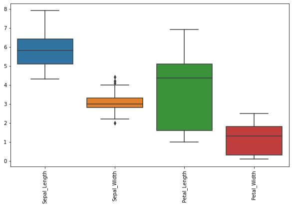

Radial Basis Functions Network
41:42 min | Última modificación: Mayo 31, 2021 | [YouTube]
[1]:
import warnings
warnings.filterwarnings("ignore")
## Definición
\[y = \sum_h w_h \exp( -\beta || \mathbf{x} - \mathbf{c} || )\]
Caso de aplicación
[2]:
import pandas as pd
df = pd.read_csv(
"https://raw.githubusercontent.com/jdvelasq/datalabs/master/datasets/iris.csv",
sep=",",
thousands=None,
decimal=".",
)
df.head()
[2]:
| Sepal_Length | Sepal_Width | Petal_Length | Petal_Width | Species | |
|---|---|---|---|---|---|
| 0 | 5.1 | 3.5 | 1.4 | 0.2 | setosa |
| 1 | 4.9 | 3.0 | 1.4 | 0.2 | setosa |
| 2 | 4.7 | 3.2 | 1.3 | 0.2 | setosa |
| 3 | 4.6 | 3.1 | 1.5 | 0.2 | setosa |
| 4 | 5.0 | 3.6 | 1.4 | 0.2 | setosa |
Preparación de los datos
[3]:
import matplotlib.pyplot as plt
import seaborn as sns
#
# Los rangos de las variables numéricas son
# bastantes diferentes
#
plt.figure(figsize=(10, 6))
sns.boxplot(data=df)
plt.xticks(rotation=90);

[4]:
X_train = df.copy()
y_train_true = X_train.pop("Species")
[5]:
from sklearn.preprocessing import MinMaxScaler
#
# Se escalan todas las variables al rango [0, 1]
# para evitar problemas asociados a la escala
#
scaler = MinMaxScaler()
X_train_norm = pd.DataFrame(scaler.fit_transform(X_train), columns=X_train.columns)
plt.figure(figsize=(10, 6))
sns.boxplot(data=X_train_norm)
plt.xticks(rotation=90);

[6]:
y_train_true = y_train_true.map(lambda w: {'setosa': 0, 'virginica': 1, 'versicolor': 2}[w])
y_train_true.head()
[6]:
0 0
1 0
2 0
3 0
4 0
Name: Species, dtype: int64
[7]:
y_train_true.tail()
[7]:
145 1
146 1
147 1
148 1
149 1
Name: Species, dtype: int64
Modelo
[14]:
import tensorflow as tf
dataset_train = tf.data.Dataset.from_tensor_slices(
(X_train_norm.values, y_train_true.values)
).batch(1)
for feat, targ in dataset_train.take(5):
print ('Features: {}, Target: {}'.format(feat, targ))
Features: [[0.22222222 0.625 0.06779661 0.04166667]], Target: [0]
Features: [[0.16666667 0.41666667 0.06779661 0.04166667]], Target: [0]
Features: [[0.11111111 0.5 0.05084746 0.04166667]], Target: [0]
Features: [[0.08333333 0.45833333 0.08474576 0.04166667]], Target: [0]
Features: [[0.19444444 0.66666667 0.06779661 0.04166667]], Target: [0]
Modelo general
[15]:
from tensorflow.keras import backend as K
class RBFLayer(tf.keras.layers.Layer):
def __init__(self, units, gamma, name="rbf_layer", **kwargs):
super(RBFLayer, self).__init__(name=name, **kwargs)
self.units = units
self.gamma = K.cast_to_floatx(gamma)
def build(self, input_shape):
self.mu = self.add_weight(
name="mu",
shape=(int(input_shape[1]), self.units),
initializer="uniform",
trainable=True,
)
super(RBFLayer, self).build(input_shape)
def call(self, inputs):
diff = K.expand_dims(inputs) - self.mu
l2 = K.sum(K.pow(diff, 2), axis=1)
out = K.exp(-1 * self.gamma * l2)
return out
def compute_output_shape(self, input_shape):
return (input_shape[0], self.units)
[16]:
def create_and_evaluate(h):
model = tf.keras.Sequential()
model.add(RBFLayer(units=h, gamma=0.5))
model.add(tf.keras.layers.Dense(1, use_bias=False))
model.compile(optimizer="adam", loss="mean_squared_error")
model.fit(dataset_train, epochs=20, verbose=0)
return model.evaluate(dataset_train, verbose=0)
Modelos
[17]:
#
# Diccionario para guardar los resultados para cada modelo
#
results = {}
[22]:
for h in range(1, 10):
results["H={}".format(h)] = create_and_evaluate(h)
Resultados
[23]:
results
[23]:
{'H=1': 1.6832853555679321,
'H=2': 0.3467676639556885,
'H=3': 0.26804354786872864,
'H=4': 0.2315817028284073,
'H=5': 0.21333031356334686,
'H=6': 0.19825662672519684,
'H=7': 0.19077588617801666,
'H=8': 0.18663306534290314,
'H=9': 0.20315112173557281}
[25]:
H_OPT = 6
model = tf.keras.Sequential()
model.add(RBFLayer(units=H_OPT, gamma=0.5))
model.add(tf.keras.layers.Dense(1, use_bias=False))
model.compile(optimizer="adam", loss="mean_squared_error")
model.fit(dataset_train, epochs=20, verbose=0)
y = model.predict(dataset_train)
y[0:50]
[25]:
array([[0.36490247],
[0.5416397 ],
[0.4101744 ],
[0.46956468],
[0.31039423],
[0.3529658 ],
[0.36412373],
[0.40808955],
[0.4989843 ],
[0.48163965],
[0.34068406],
[0.39472446],
[0.4893034 ],
[0.3533485 ],
[0.22945747],
[0.17569327],
[0.29312208],
[0.39824784],
[0.398292 ],
[0.29319602],
[0.4966484 ],
[0.36447194],
[0.18689519],
[0.5991758 ],
[0.44414243],
[0.59248173],
[0.49215147],
[0.39530736],
[0.41997868],
[0.46185023],
[0.51952124],
[0.5302744 ],
[0.13490608],
[0.15283683],
[0.51784074],
[0.4392444 ],
[0.40217784],
[0.26273298],
[0.44128552],
[0.4225855 ],
[0.36739135],
[0.7617327 ],
[0.3611086 ],
[0.51255715],
[0.38537344],
[0.56154084],
[0.2770794 ],
[0.41130346],
[0.3277123 ],
[0.43257242]], dtype=float32)
[26]:
y[50:100]
[26]:
array([[1.2520281],
[1.2770954],
[1.3136126],
[1.5642669],
[1.4524027],
[1.4282722],
[1.2438893],
[1.3350649],
[1.3967894],
[1.3887393],
[1.496742 ],
[1.3456142],
[1.5804024],
[1.4177132],
[1.3033996],
[1.3020864],
[1.3491755],
[1.4037266],
[1.6599728],
[1.4685122],
[1.2882893],
[1.4080244],
[1.5813233],
[1.4426916],
[1.3867936],
[1.3506563],
[1.4390348],
[1.3710345],
[1.4110588],
[1.3779731],
[1.4865236],
[1.4582429],
[1.4185795],
[1.515995 ],
[1.3334241],
[1.1839298],
[1.3203231],
[1.6164727],
[1.3049514],
[1.4960432],
[1.4772413],
[1.3690608],
[1.4672167],
[1.3850135],
[1.4427402],
[1.3074688],
[1.3646413],
[1.3884081],
[1.3088975],
[1.4001714]], dtype=float32)
[27]:
y[100:]
[27]:
array([[1.1582882 ],
[1.495252 ],
[1.293475 ],
[1.4291296 ],
[1.3293347 ],
[1.1983786 ],
[1.4782385 ],
[1.3262295 ],
[1.5438913 ],
[0.98280066],
[1.2774997 ],
[1.4930207 ],
[1.3294759 ],
[1.5476679 ],
[1.3783247 ],
[1.2415808 ],
[1.3815963 ],
[0.87981606],
[1.2430836 ],
[1.6776216 ],
[1.2088957 ],
[1.4341707 ],
[1.2533792 ],
[1.5005128 ],
[1.213915 ],
[1.2356519 ],
[1.4616382 ],
[1.3830364 ],
[1.428434 ],
[1.32867 ],
[1.3437793 ],
[0.88483125],
[1.4112478 ],
[1.4748714 ],
[1.5549246 ],
[1.1709994 ],
[1.1436349 ],
[1.3437726 ],
[1.3790867 ],
[1.2826219 ],
[1.244713 ],
[1.249951 ],
[1.495252 ],
[1.2131146 ],
[1.1460897 ],
[1.3041041 ],
[1.562139 ],
[1.3621104 ],
[1.1626511 ],
[1.3854591 ]], dtype=float32)
[ ]: